Proj4: Neural Radiance Field
Part 0: Camera Calibration and 3D Scanning
This is my full pipeline: first calibrating my phone camera with an ArUco grid, then estimating camera-to-world poses for every capture, undistorting the images, and packaging everything into object_dataset.npz for later stages. Instead of following the spec’s “single marker in the capture set” recipe, I printed a small multi-marker board (3×2 grid) so every shot still had enough tag area for solvePnP but let me swing around to wider viewpoints without losing pose accuracy. I also kept the calibration handy for reuse, shuffled the capture order into train/val/test splits, and double-checked everything in viser before exporting the dataset.
Here is the camera frustum visualization from viser from two views:
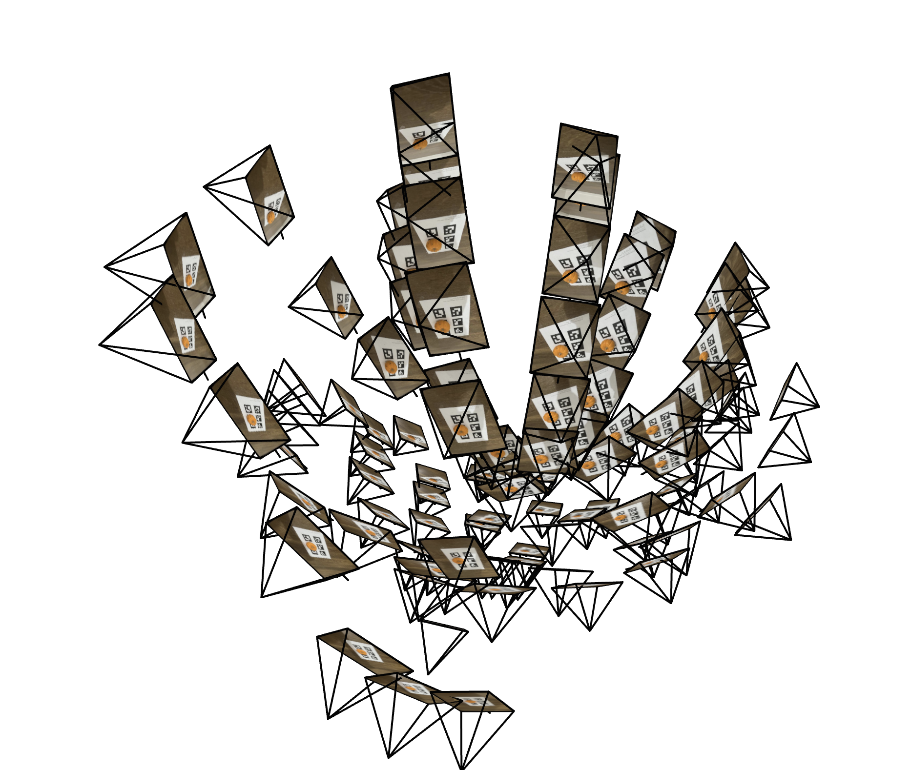 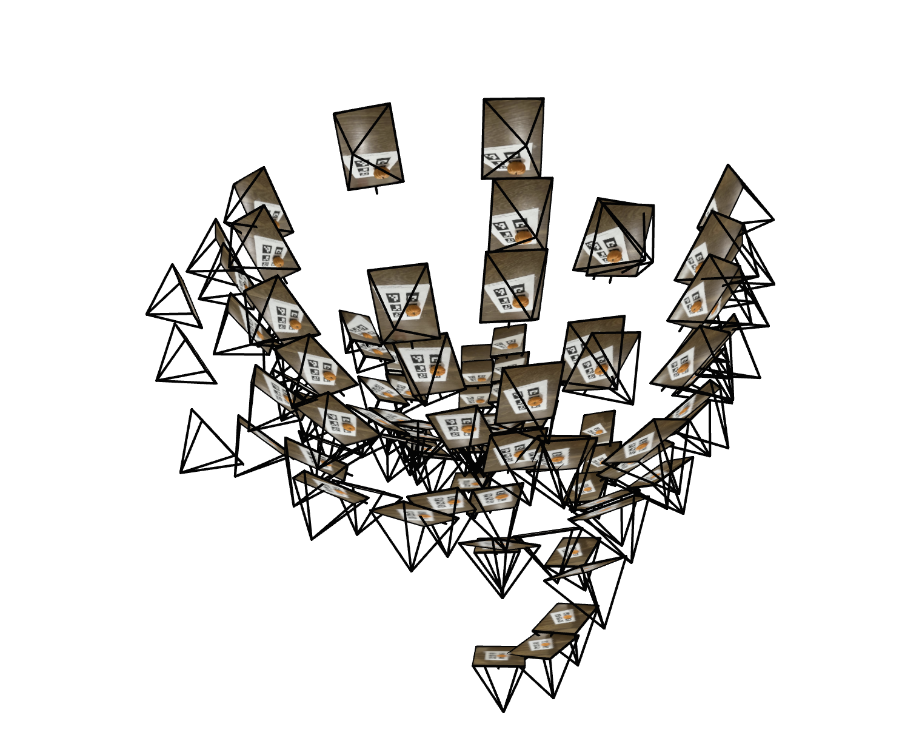Part 1: Fit a Neural Field to a 2D Image
In this part, I fit a neural field (an MLP) to represent a single 2D image. The network learned to map 2D pixel coordinates (u, v) to their corresponding 3-channel RGB color values.
Model Architecture
The network is still a coordinate MLP, but everything happens in 2D. I map each pixel location through an L=10 positional encoding, which stretches the (x, y) pair into 42 scalars. Those features flow through four fully connected blocks at width 256, each followed by ReLU, before a final layer with Sigmoid produces RGB in the [0, 1] range. All layers use Xavier uniform init. I optimized the weights with Adam on MSE loss, running 2,000 iterations with a batch of 10,000 pixels at a learning rate of 1e-2.
Training Progression
Below are visualizations showing the network's output at different stages of training, demonstrating its convergence from a random initialization to a clear representation of the target image.
1. Provided Test Image:
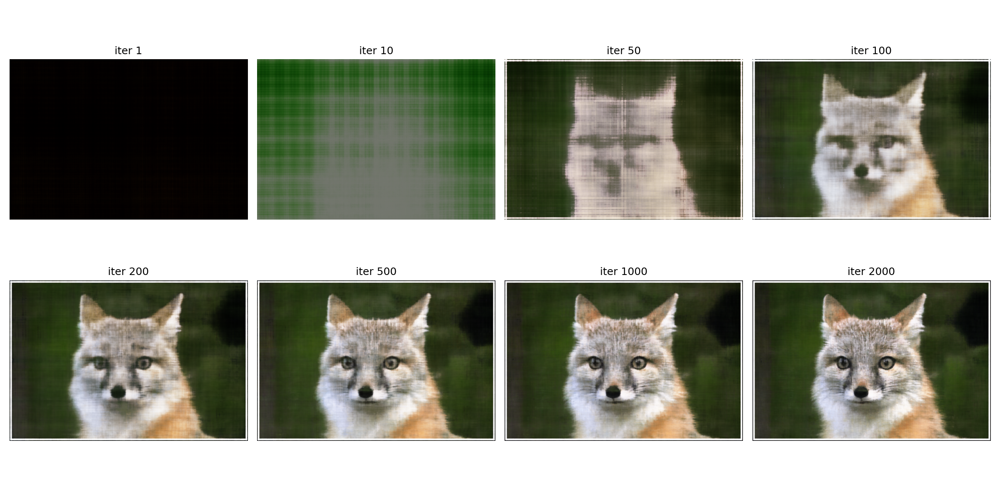2. My Own Image:

Hyperparameter Tuning
I explored the effects of varying the positional encoding's max frequency (L) and the network's width. The results are shown in the 2x2 grid below.
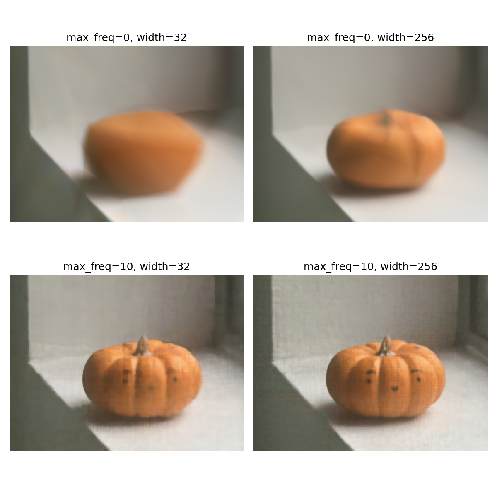As seen, a higher frequency (L) is crucial for capturing high-frequency details. A larger network width also improves the model's capacity to represent the image accurately, preventing oversmoothing.
PSNR Curve
The following plot shows the Peak Signal-to-Noise Ratio (PSNR) over training iterations for one of the images.
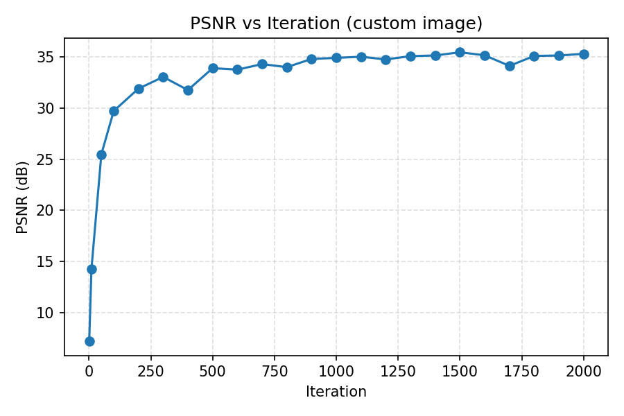Part 2: Fit a Neural Radiance Field from Multi-view Images
I first implemented the functions without using batch. Then I vectorized the implementation to support batch processing.
Part 2.1 Create Rays from Cameras
Camera to world coordinate conversion: multiply camera-space points by the c2w rotation and add translation to get world-space positions.
Pixel to camera coordinate conversion: subtract the principal point, divide by focal lengths, and scale by depth to back-project pixel coordinates into camera space.
Pixel to ray: use the camera origin (translation) with normalized directions from the back-projected points to build per-pixel rays.
Part 2.2 Sampling
Sampling rays from images: precompute all ray origins/directions and RGB targets for every camera to sample random training batches efficiently.
Sample along rays: stratified sample N points between near/far per ray (with optional perturbation) and lift them into 3D for NeRF evaluation.
Part 2.3 Putting the Dataloading All Together
I put together the dataloading pipeline and visualize the sampled rays using the provided script. Here is a screenshot of the visualization of sampled rays from multiple images:
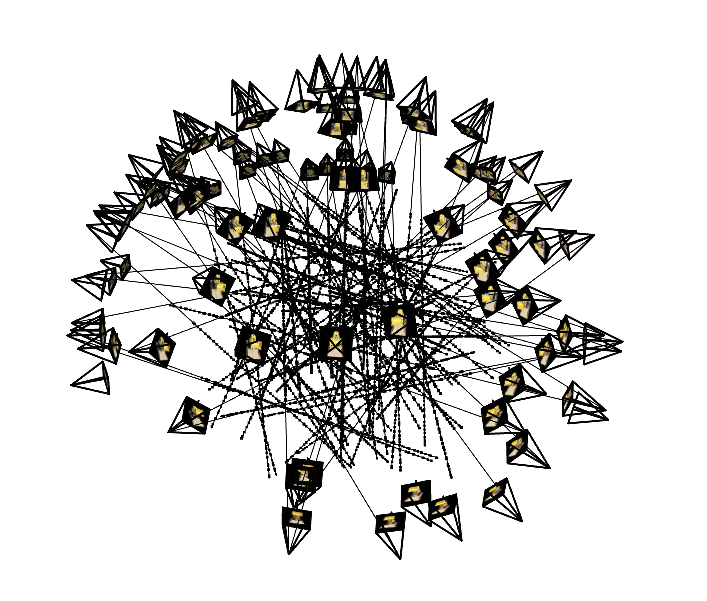Here is a screenshot of the visualization of sampled rays from a single image:
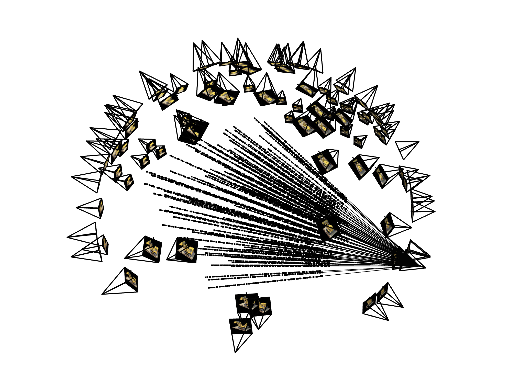Part 2.4 Neural Radiance Field
The network still follows the Part 1 MLP recipe, but now the inputs are 3D samples and their view directions. In practice, I expand each 3D location with an L=10 positional encoding (63 dims) and run it through an 8-layer, 256-wide MLP. Every fourth layer re-concatenates the original encoding so deeper blocks don’t lose sight of the input. The density head is a single linear layer with ReLU to keep sigma non-negative. The color head concatenates the shared features with an L=4 encoding of the unit ray direction, then passes through two linear layers ending in a Sigmoid to clamp RGB to [0, 1]. The model therefore produces (sigma, rgb) tuples ready for volume rendering.
Part 2.5 Volume Rendering
After predicting (sigma, rgb), I integrate along each ray in torch. A fixed step size produces deltas, alphas come from 1 - exp(-sigma * delta), and a running cumprod keeps track of how much light survives earlier samples. Multiplying those weights with RGB and summing yields the rendered color, and the whole chain stays differentiable for backprop. With this renderer plus the MLP above, the lego run clears 23 dB PSNR (peaking near 24) using Adam at 5e-4 for roughly a thousand steps with 10K rays per batch.
Using the above components, I trained the NeRF on the provided lego dataset. Below are the training progression and PSNR curve:
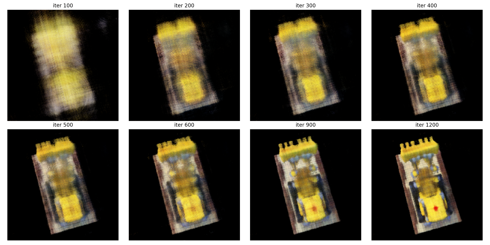 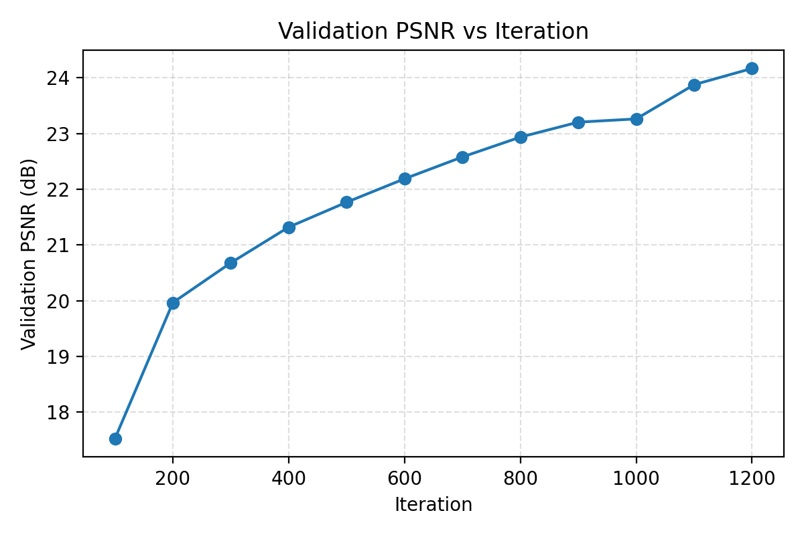Part 2.6: Training with My Own Data
For my custom object I reused the same pipeline but shrank the near/far bounds to 0.05–0.5 meters so the sampler hugged the small scene. I kept the batch size at 10k rays and trained for roughly 3k iterations, stopping once the validation PSNR stopped improving even though the training loss was still inching downward. At that point the renders had converged and the held-out PSNR had plateaued, so I saved the best-performing checkpoint and moved on to generating the required figures.
Below are the required deliverables I generated:
Training loss over time:
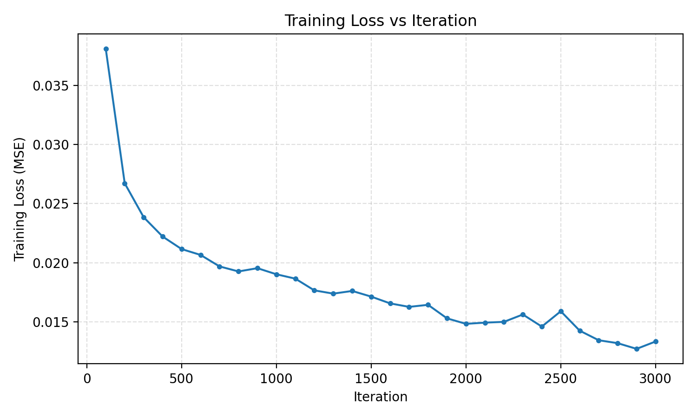Validation PSNR curve:
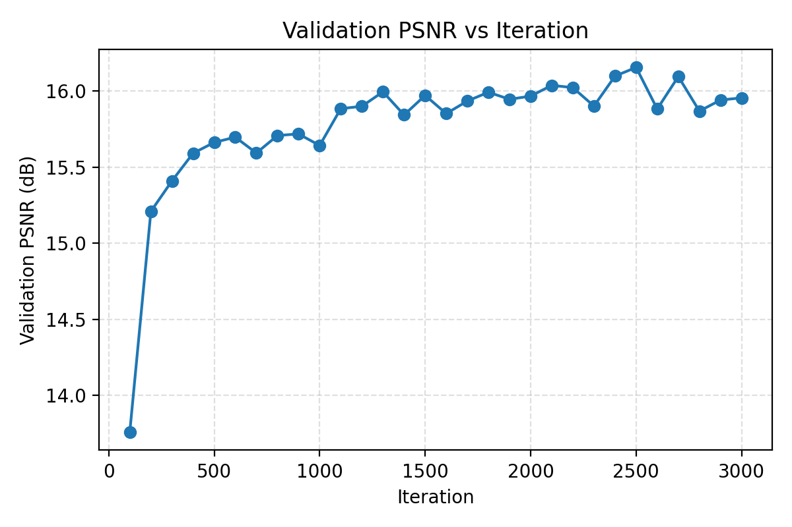Intermediate validation renders:
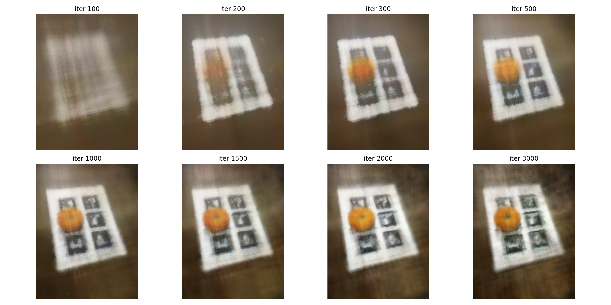Orbit of novel views: